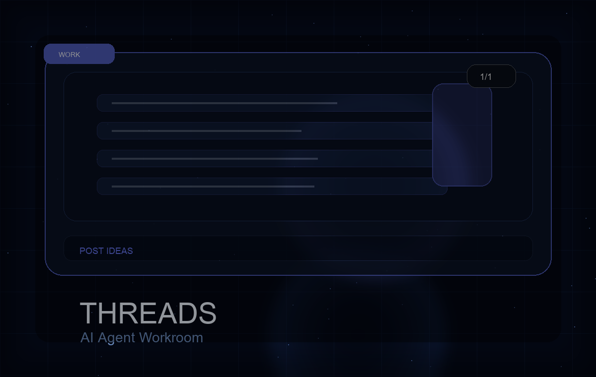

作業の目的
会話や作業ログから、手動リライト用のThreads投稿案をストックする。

1/1SNS / Codex
日々の会話や作業ログから、手動リライト前提のThreads投稿案をストックする運用設計。
Work detail
会話や作業ログから、手動リライト用のThreads投稿案をストックする。
予約投稿ではなく、ユーザーが自分で直して投稿できる一次情報ベースの案を蓄積できた。
当日のデイリー、反応ログ、DiginoteAI更新、作業中の気づき。
最終的な言い回し、絵文字、投稿タイミングは本人が決めると伸びる型を学習しやすい。
SNSをAI任せにしすぎず、自分のトーンを育てたい人。
AIの完成文をそのまま出すより、本人の熱量を足した方が反応を取りやすい。
Related works